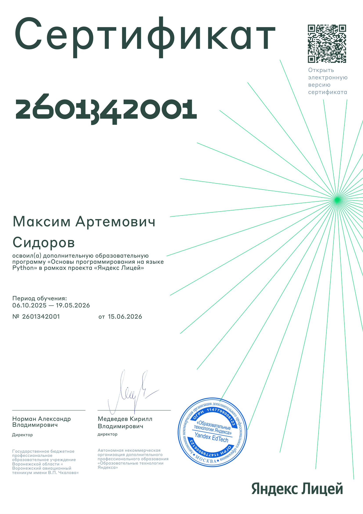

Создаю решения, готовые к завтрашнему дню.
Fullstack-разработчик на JavaScript, Python и C#.
Проектирую архитектуру серверных систем, разрабатываю надежные API, создаю отзывчивые интерфейсы и десктопные приложения. Нацелен на чистоту кода и высокую производительность конечного продукта.
Написал первую компьютерную игру на C#
Создал полноценную систему отзывов для городской поликлиники
Продал разработанный с нуля VPN за $1000
???
Опыт работы
Backend Python Разработчик
Интеграция платежных систем (криптовалютные транзакции и фиатные шлюзы). Разработка REST API для вебхуков, ведение детального логирования для финансового аудита и автоматизация процессов.
Backend Стажер-разработчик
Проектирование и разработка крупной системы обратной связи на Python в экосистеме Telegram. Работа в команде над масштабируемой архитектурой в организации со штатом более 1500 сотрудников. Проект успешно запущен с высоким уровнем удовлетворенности пользователей (более 2000 отзывов).
Unity-разработчик
Разработка полноценной инди-игры в жанре Tower Defence с использованием классов Unity и сторонних библиотек. Опыт работы в составе распределенной инди-команды из 10 специалистов.
Мои Проекты
CrackVPN
Красиво оформленный Telegram-бот с интегрированной системой оплаты CryptoPay и Telegram Stars, серверами со скоростью до 10 Гбит/с и полной автономностью работы.
Nopeer.pw — P2P Messenger
Децентрализованная платформа для обмена сообщениями, обеспечивающая прямое P2P-взаимодействие пользователей со сквозным шифрованием (E2EE) без участия централизованных серверов.
Система обратной связи (ВГКП №4)
Крупная корпоративная система обратной связи на Python в экосистеме Telegram для организации со штатом более 1500 сотрудников. Проект успешно запущен и обработал 2000+ отзывов.
Go Site Monitor
Высокопроизводительный микросервис на языке Go для регулярной проверки доступности сайтов, отслеживания HTTP-статусов и времени отклика в реальном времени.
Локальный блокчейн
Локальная реализация блокчейн-цепи на Python с поддержкой майнинга, SHA-256 хеширования блоков, созданием кошельков и распределенным сетевым API на FastAPI.
Webscan
Инструмент для комплексного технического аудита и анализа безопасности веб-приложений. Проверяет заголовки HTTP, наличие утечек, параметры SEO-оптимизации, задержку сети (Latency) и автоматически генерирует исполнительное резюме с помощью встроенного ИИ-агента.
Управление майнером XMRig
Telegram-бот для удаленного мониторинга, управления конфигурациями и получения уведомлений от майнеров XMRig в реальном времени через API.
Сертификаты и образование

Основы программирования на языке Python
Яндекс Лицей
Программа охватывает ключевые концепции Python: типы данных, управляющие конструкции, функции, работу с файлами и модулями. Курс построен на практических задачах и реальных проектах в одной из ведущих технологических компаний России.
«Fullstack-разработчик»
Новосибирская академия дизайна и программирования
Python, C#, Веб-дизайн
Сентябрь 2022 - Май 2025«Python: шаг за шагом»
Яндекс Лицей
Python
Апрель 2025 - Июнь 2026Уровень английского B1+
Языковая школа «Мариоль»
Английский язык
Сентябрь 2018 - Май 2026